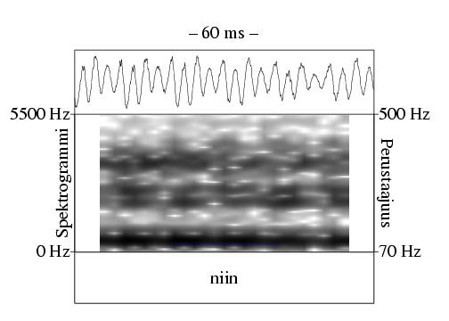
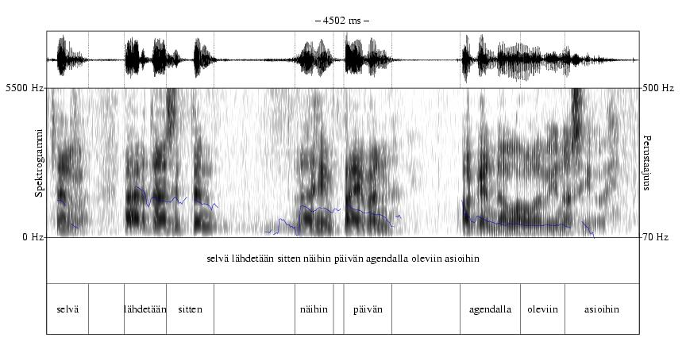
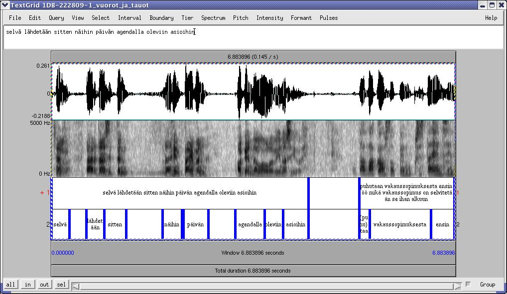
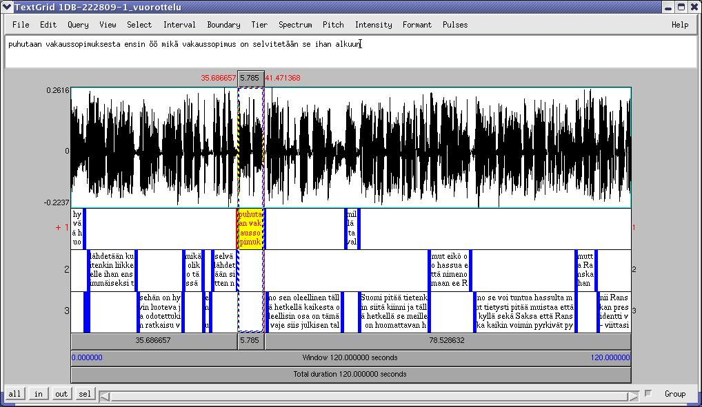

Yhden puhujan yhden tai useamman peräkkäisen lausuman muodostama kokonaisuus, jonka aikana toiset puhujat eivät onnistuneesti keskeytä. Lausumien lisäksi vuoron rakenneyksiköinä voivat periaatteessa toimia eleet (12) ja ilmeet (12) sekä paralingvistiset yksiköt (7, esim. pään nyökkäys tai nauru). Puhujanvaihdokset osoittavat vuoron alkua ja loppua. Vuoron sisällä voi olla taukoja6.1 (11).
|

(http://www.csc.fi/kielipankki/puhe/recordings/1DB-220197/). |
Vuoron nimikointia varten tulisi luoda kullekin puhujalle oma annotointikerros, koska puheenvuorot menevät ainakin arkikeskustelussa yleensä osin päällekkäin. Näin myös päällekkäispuhunnat saadaan näkyviin ilman erillistä annotointikerrosta.
Jos vuorojen nimikointiin käytetään Puh-editoria ja puhujia on monta, voidaan haluttaessa käyttää vähemmän vuorokerroksia, jolloin nimikoidaan esimerkiksi kahden tai kolmen puhujan vuoroyksiköt samaan annotaatiokerrokseen. Tällöin kussakin vuoroyksikössä esiintyvä puhuja täytyy merkitä erikseen yksikön ominaisuuden soundSource (äänilähde) avulla (ks. 8). Mikäli nimikointiin käytetään Puh-editorin sijaan Praatia tai jotakin muuta ohjelmaa, on kunkin puhujan vuoroille aina tehtävä oma Turn-annotaatiokerros.
Puhujien minimipalautteet eli vastauspartikkelit merkitään omiksi vuoroikseen. Jos minimipalaute tuotetaan kokonaan päällekkäispuhunnan aikana, toisen puhujan vuoro ei (välttämättä) jakaudu kahtia.
Annotoija päättää tapauskohtaisesti, esiintyvätkö tauot vuorojen välillä vai ovatko ne vuoronsisäisiä. Yleistäen ja yksinkertaistaen voitaneen sanoa, että mikäli vuoro on syntaktisesti ja/tai prosodisesti kesken, se voi sietää jopa yli sekunnin mittaisia taukoja. Jos selkeitä keskeneräisyyden osoittimia ei ole, yli puolen sekunnin tauot vuoron sisällä ovat harvinaisia. Kuvassa 6.2 on vuoro, joka koostuu kahdesta lausumasta. Jälkimmäinen niistä sisältää kaksi yli puolen sekunnin mittaista taukoa, jotka ovat vuoronsisäisiä. Tulkintaa puoltavat sekä syntaksi että prosodia. Kuvassa 6.3 on kuvan 6.2 vuoro ja osa sitä seuraavasta vuorosta. Vuorot ovat eri puhujien tuottamia. Ensimmäisen vuoron toisen lausuman jälkeinen tauko on rajattu molempien vuorojen ulkopuolelle. Nimikoinnissa on käytetty rajaamiskriteereinä jälleen sekä prosodiaa että syntaksia: lausuma ja vuoro ovat syntaktisesti ja prosodisesti loppuun saatettuja, eikä tauon näin ollen oleteta kuuluvan kumpaankaan vuoroon.
|

(http://www.csc.fi/kielipankki/puhe/recordings/1DB-222809-1/). |
|

(http://www.csc.fi/kielipankki/puhe/recordings/1DB-222809-1/). |
Vuorot rajautuvat puhujanvaihdosten kautta. Tätä havainnollistaa kuva 6.4, johon on nimikoitu kahden ensimmäisen minuutin vuorot yhdestä Ylen Aamu-tv:n haastattelusta. Vuorojen välillä ei tarvitse olla taukoa vaan vuorot voivat liittyä saumattomasti toisiinsa.
|

(http://www.csc.fi/kielipankki/puhe/recordings/1DB-222809-1/). |
Koska aineiston nimikointi kannattaa aloittaa laajimmasta yksiköstä, olisi vuorot hyvä nimikoida ensimmäisenä. Mikäli lausumat, sanat, tavut ja/tai äänteet on rajattu omiin kerroksiinsa ennen vuoroja, kohdistetaan vuorojen rajat näiden kanssa soveltuvin osin.
Ortografinen litteraatti.